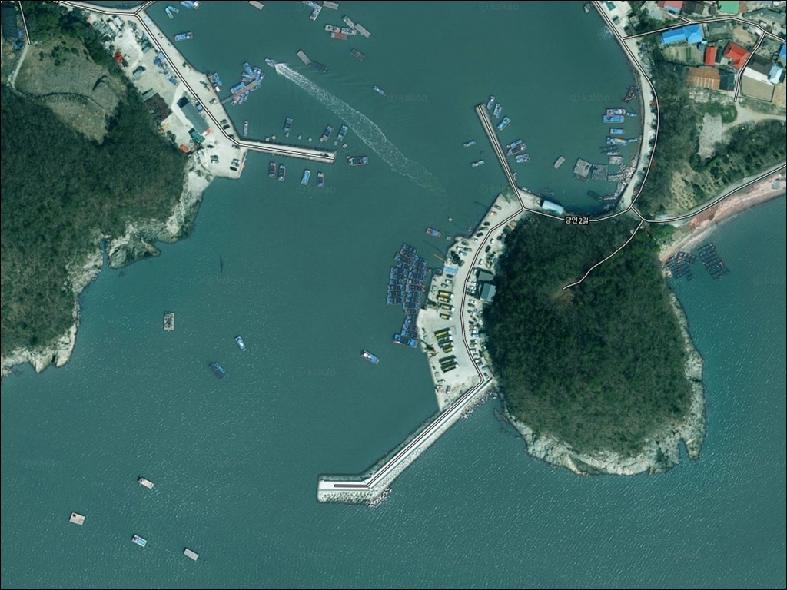
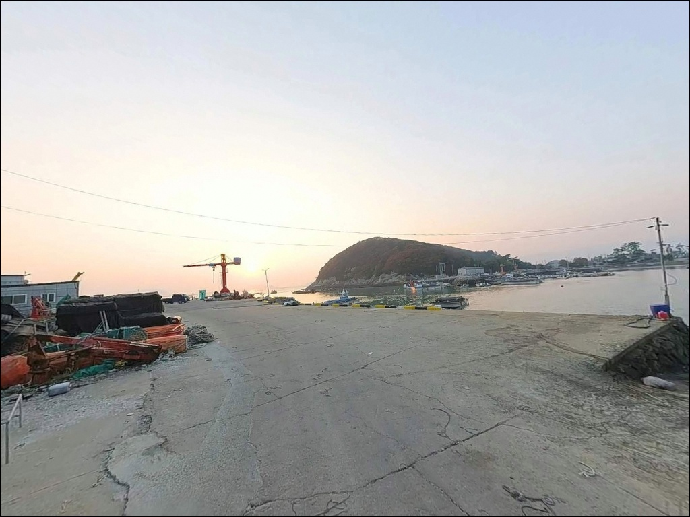
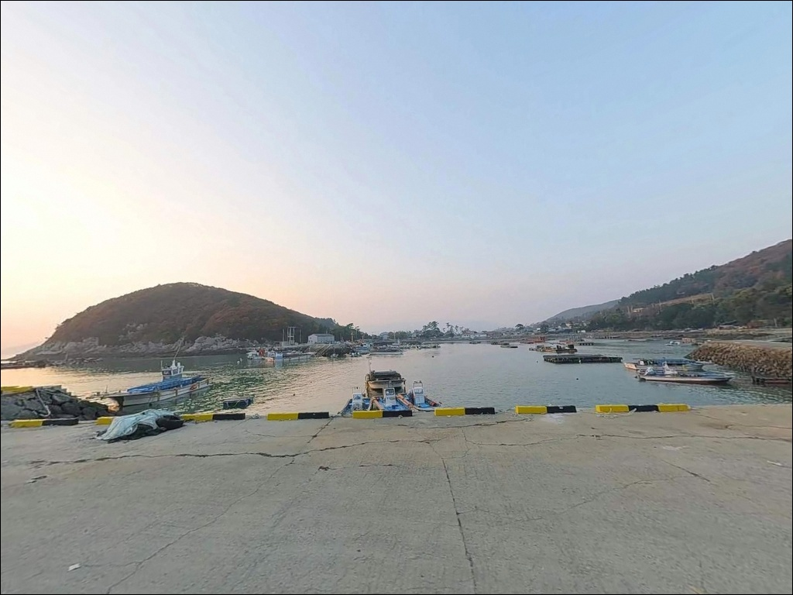
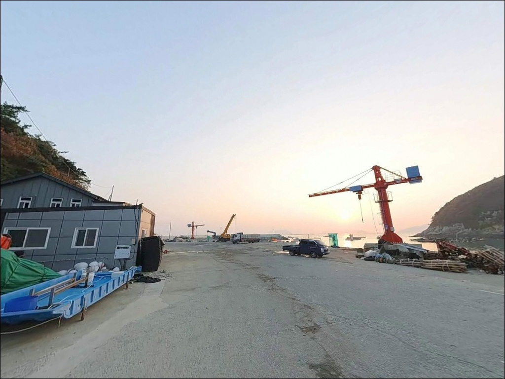
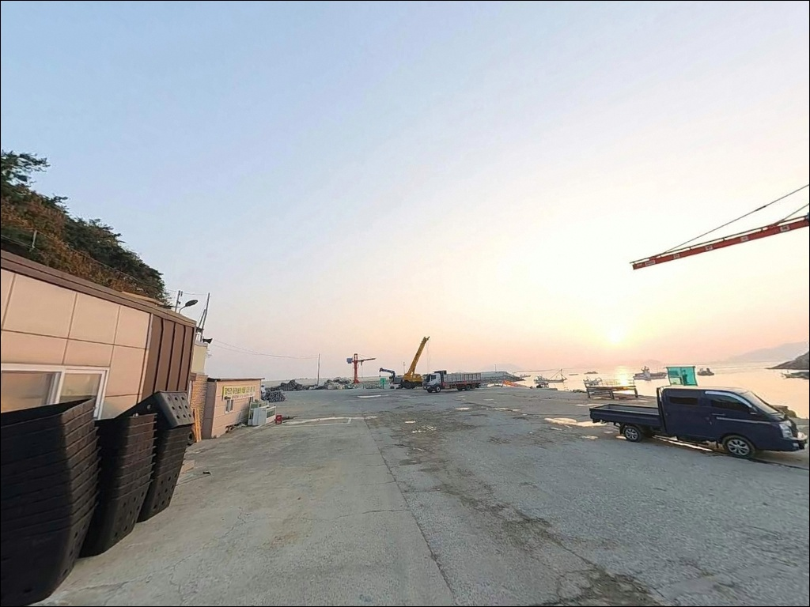
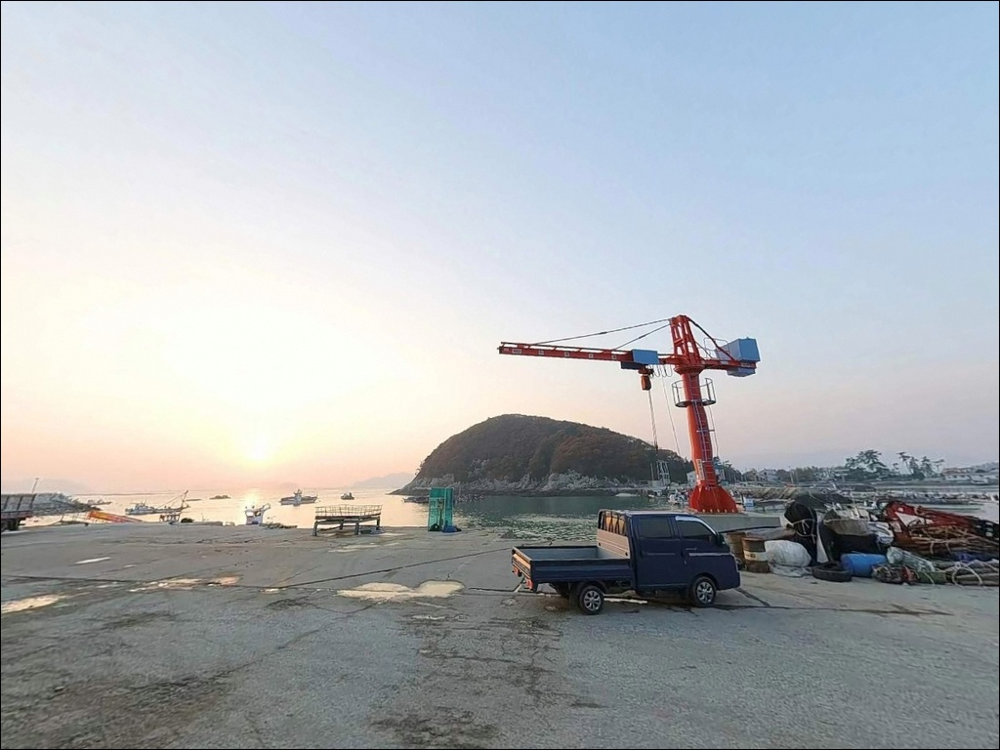
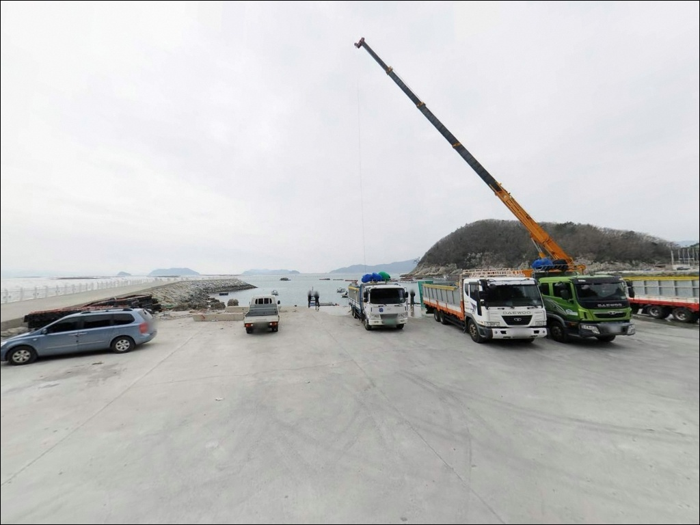
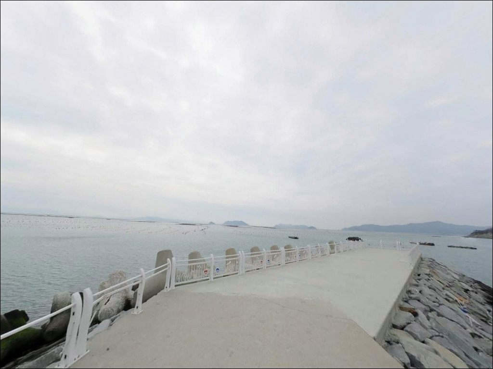
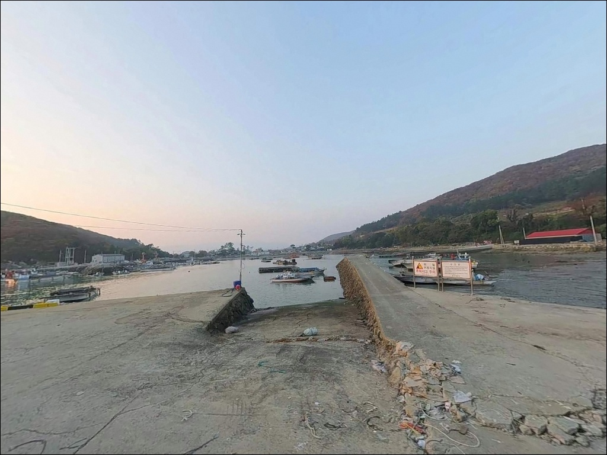

당인항, 당인리방파제, 전남 완도군 원투 낚시 마니아 추천 바다 차박 낚시 스팟
이 페이지에는 광고(제휴 링크 포함)가 있으며, 광고 링크를 통해 구매하면 운영자가 판매 수익 또는 수수료를 받을 수 있습니다. 포인트 사진: 카카오맵 스카이뷰·로드뷰. 이 페이지의 지도·사진 이미지는 카카오맵의 실제 서비스 이미지와 다를 수 있습니다.


포인트 안내
당인항(당인리방파제)
전남 완도군 군외면 당인리 182-15
온라인에 자료가 없다는 이유로
포인트를 건너뛰면 놓치는 자리가 생깁니다.
당인항(당인리방파제)은 낚시 커뮤니티에
조황 기록이 거의 없는 곳이지만,
완도 내만 특유의 조용한 수면과
4~6m 내외 수심을 갖춘
방파제 구조 포인트입니다.
완도 본섬 북서쪽,
군외면 당인리 해안에 위치한 이곳은
어촌정주어항으로 등록된 소규모 항구로,
방파제와 물양장이 정비된 구조를 갖추고 있습니다.
청해진서부로길과 인접해 차량 진입이 수월하며,
대형 장비 없이 가볍게 방문할 수 있는
내만형 포인트입니다.
이 글은
당인항(당인리방파제)의
진입 동선, 차박 여건, 지형 기반 낚시 여건,
낚시 스타일 적합성에 집중합니다.
조황 단정이나 특정 어종 보장은
이 글의 범위에 포함되지 않습니다.

1. 진입 동선과 포인트 접근성
당인항(당인리방파제)은 청해진서부로길과 인접한 위치로,
완도대교 방면에서 군외면 해안도로를 따라
당인리 방향으로 접근하는 구조입니다.
완도 본섬 안쪽 내만 해안에 자리해
외해 노출 없이 도로가 항구까지 이어지는
진입 난이도가 낮은 편입니다.
다만 당인리 마을 안쪽으로 들어가는 구간은
농어촌 마을도로 수준이라
폭이 다소 좁을 수 있습니다.
대형 캠핑카나 긴 휠베이스 차량이라면
출발 전 위성지도로 진입로를
한 번 확인하고 가는 편이 안전합니다.
주차는 방파제 인근 공터와
물양장 앞 도로 가장자리를
활용하는 방식이 일반적입니다.
어촌뉴딜300 사업으로 정비된 구조여서
선착장 주변 공간이 비교적 정돈된 편이나,
어선 접안 동선을 막지 않는 자리를
먼저 확인한 뒤 주차해야 합니다.

2. 차박 환경과 야간 체류 여건
당인리는 인구가 적은 소규모 어촌 마을로,
야간에는 차량 통행이 적고
조용한 환경이 유지되는 편입니다.
마을과 어느 정도 거리를 둔 방파제 쪽 자리라면
프라이버시 확보가 가능한 수준입니다.
다만 민가와 너무 가까운 자리는
이웃 주민 배려 차원에서 피하는 것이 좋습니다.
야간 조명은 어항 특성상 일부 작업등이나
가로등이 있을 수 있지만,
소규모 마을 항구인 만큼
조명이 부족한 구간도 있습니다.
개인 조명 장비는 반드시 챙겨야 하며,
야간 방파제 끝단 이동 시에는
헤드랜턴을 상시 착용하는 것이 기본입니다.
내만 구조여서 외해보다 파도 소음이 적고
바람 영향도 상대적으로 덜한 환경입니다.
낚시 후 조용히 하룻밤 머무는 용도로는
나쁘지 않은 여건이지만,
주차 공간이 넓지 않아
차박을 메인 목적으로 삼기보다는
낚시 후 체류 정도로 접근하는 편이 현실적입니다.


3. 주변 편의시설 및 인프라 현황
당인항 반경 3km 이내에는
편의점이나 식당 정보가 확인되지 않습니다.
군외면 원동리 방향으로 이동하면
GS25와 CU 편의점이 있는 것으로 확인되나,
당인리에서의 실제 도로 거리는
방문 전 지도로 직접 확인하는 것이 정확합니다.
완도대교를 통해 완도읍 방면으로 이동하면
대형 마트와 의료 시설을 이용할 수 있습니다.
응급 상황 발생 시 완도읍까지
이동 시간이 걸리는 구조이므로,
식수·비상약품·연료는 출발 전에
모두 준비하고 진입하는 것이 기본입니다.

4. 진입 전 반드시 챙겨야 할 준비사항
당인항(당인리방파제) 방문 전
가장 먼저 확인할 것은 물때입니다.
내만 구조여서 외해보다 조류가 약한 편이지만,
사리 전후에는 내만에도 조류 흐름이 생기고
낚시 여건이 달라집니다.
바다타임에서 당인리 인근 기준 물때를 확인하고
조류가 적당히 흐르는 조금 전후 타이밍을
기준으로 출발 시각을 맞추는 것이 좋습니다.
온라인 낚시 정보가 거의 없는 포인트인 만큼
처음 방문이라면 완도 군외면 일대 조황을
출발 전에 한 번 검색해두는 편이 좋습니다.
인근 삼두리방파제나 원동선착장 조황 정보도
함께 파악해두면 현장에서 이동 판단이 빠릅니다.
암초 지형 구간은 밑걸림이 생길 수 있어
여분 채비를 넉넉하게 준비하는 것이 좋습니다.
어항 내 어선 출입 동선을 확인하고,
선박이 접안하는 물양장 구역에는
주차와 낚시 채비를 피해야 합니다.
야간 낚시 시에는 구명조끼 착용이 기본이며,
방파제 끝단 이동 시
미끄럼과 발판 상태를 반드시 확인합니다.

5. 지형 기반 낚시 여건 — 내만 소항구에서 기대할 수 있는 조건
당인항(당인리방파제)은 완도 본섬 북쪽
내만 해안선 안쪽에 자리한 소형 어항입니다.
외해에 직접 노출되지 않는 반폐쇄형 지형이라
파도 영향이 적고 수면이 잔잔한 편입니다.
수심은 방파제 주변 4~6m 내외로 추정되며,
바닥은 펄과 모래가 혼합된 구조로
밑걸림은 심하지 않은 편입니다.
방파제 끝단으로 갈수록 수심이 다소 깊어지는
전형적인 소항구 지형 구조입니다.
항 입구 쪽은 선박 출입에 따른
조류 흐름이 어느 정도 형성되는 구간이어서,
이 구간 주변이 낚시 자리로
가장 활성도가 높은 구역이 됩니다.
완도 내만 해역 특성상 기대해볼 수 있는 어종은
볼락, 감성돔, 붕장어, 숭어, 노래미 등입니다.
단 어종과 조황은 계절과 물때에 따라 달라지므로
출조 전에 완도 군외면 일대 최신 조황을
반드시 검색해 보시기 바랍니다.
원투낚시란 무거운 봉돌을 이용해 채비를 멀리
던져 바닥층 어종을 노리는 낚시 방식입니다.


6. 포인트에 어울리는 낚시 스타일
원투낚시는 이 포인트 구조에 가장 잘 맞는 방식입니다.
펄·모래 혼합 바닥에 수심 4~6m 구조는
20~30호 봉돌로 방파제 끝단이나
항 입구 방향으로 던지는 원투낚시에 적합합니다.
붕장어나 숭어 등
야간 시간대에 바닥층을 노리는
원투 방식이 이 구조에서 유효합니다.
볼락 라이트게임도 노려볼 수 있습니다.
방파제 구조물 주변과 항 내부 암초 구간은
볼락이 머물기 좋은 지형 조건을 갖추고 있습니다.
소형 지그헤드 채비로 방파제 끝단과
구조물 경계를 천천히 탐색하는 방식이며,
야간 라이트게임이 이 포인트에서
가장 합리적인 접근 방식입니다.
찌낚시도 내만 잔잔한 수면에서 시도해볼 만합니다.
방파제 외측 테두리를 따라
감성돔이나 볼락을 노리는 방식으로,
봄과 가을 물때가 맞는 날
조류 흐름이 살아있는 타이밍에
자리를 잡으면 조과를 기대해볼 수 있는 구간입니다.
볼락 라이트게임이란 소형 지그헤드와 웜을 사용해
볼락을 대상으로 하는 라이트 루어낚시 방식입니다.

7. 대안 포인트와 플랜 B 동선
당인항(당인리방파제)에서 조류 여건이 여의치 않거나
주차 공간이 없을 때
첫 번째 대안은 삼두리방파제입니다.
당인항에서 약 2.5km 거리에 있으며,
조류 소통이 양호하고 수심 5~8m 구간이
형성되어 있어 원투낚시와 루어낚시 모두 가능합니다.
같은 군외면 내 원동선착장도
조용한 내만 환경을 비슷하게 갖추고 있습니다.
수심 3~5m 수준으로 당인항과 유사한 구조여서
현지 분위기와 낚시 여건을 비교해보는
탐색 동선으로 함께 묶어 돌아보기 좋은 포인트입니다.
당인항을 처음 방문하는 경우라면
두 곳을 세트로 계획해두는 편이 효율적입니다.
완도 본섬 남서쪽 방면으로 이동하면
완도읍 인근 방파제 포인트가 있습니다.
완도대교를 기점으로 이동하면
원동항을 거쳐 더 규모 있는 방파제 포인트에
접근할 수 있어,
당인항과 함께 계획하는 이동 동선으로 활용할 수 있습니다.

조용히 자리 잡고 싶은 낚시인에게
당인항(당인리방파제)이 맞는 이유
온라인에 낚시 자료가 없다는 사실이
이 포인트의 단점이 아닐 수 있습니다.
사람이 몰리지 않는 조용한 내만 방파제를 찾는다면,
당인항(당인리방파제)은 충분히
한 번 직접 발품을 팔아볼 가치가 있는 곳입니다.
원투낚시와 볼락 라이트게임에 관심 있는 낚시인이라면
이 포인트 구조가 잘 맞는 환경입니다.
반면 편의시설이 가까운 곳을 원하거나
조황 정보를 먼저 확인하고 출발하는 스타일이라면
인근 삼두리방파제나 원동선착장과 병행해서
동선을 짜는 편이 불필요한 헛걸음을 줄이는 방법입니다.
물때 확인, 진입로 사전 점검, 완전 자급 준비,
이 세 가지만 갖추면
아직 덜 알려진 완도 내만 방파제에서
기억에 남는 출조가 될 수 있는 포인트입니다.
낚시 후 조용한 내만에 차를 대고
하룻밤 머무는 간소한 차박을 즐긴다면,
파도 소음 없는 잔잔한 군외면 내만의 밤이
그 자체로 이 포인트의 이유가 됩니다.